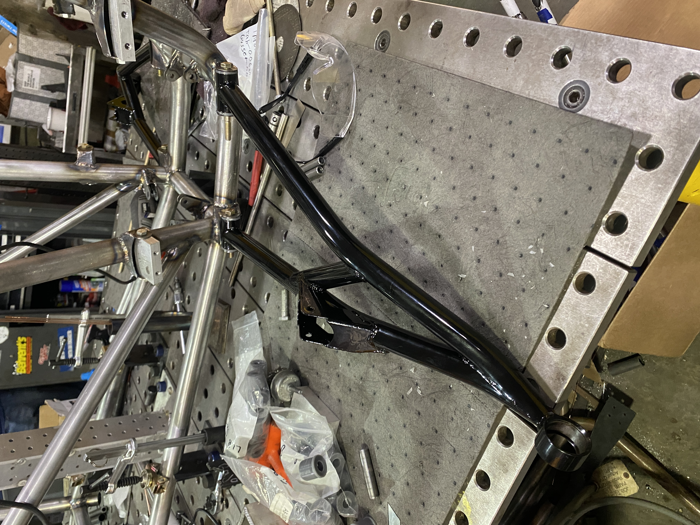
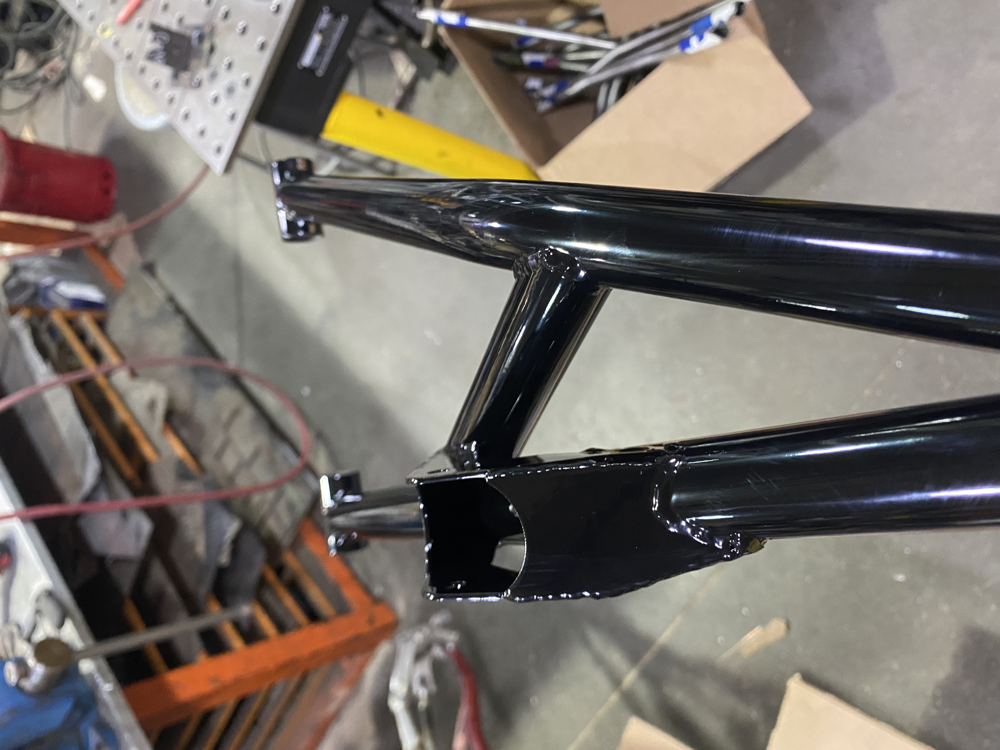
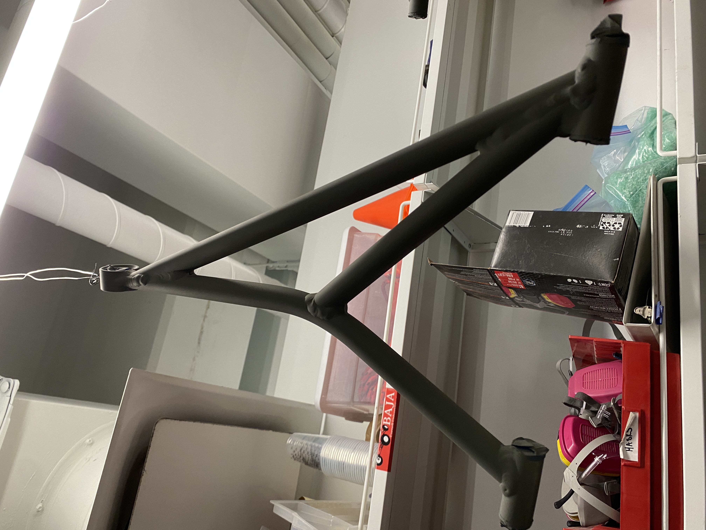
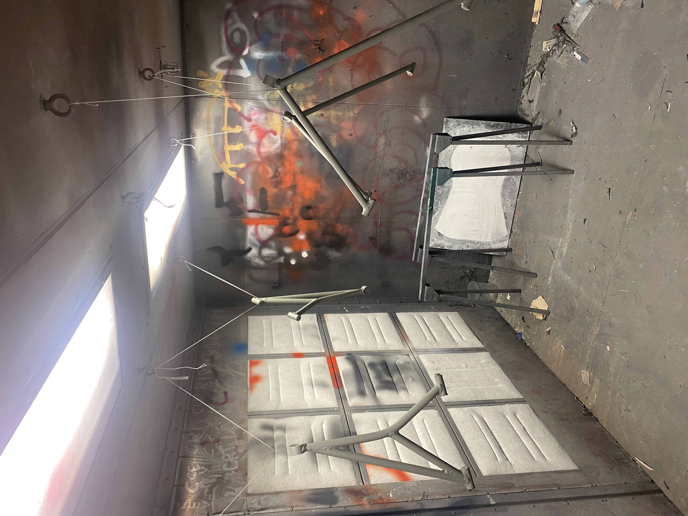

Suspension Links
As a junior on Cornell Baja, I designed, analysed, and am currently manufacturing the front A-arm suspension linkages for TG22, our vehicle for the 2026 Baja SAE season.
Overview
My design set out to address 2 primary issues with the legacy design: manufacturability, and packaging.
Addressing Manufacturability: The previous year's links functioned very well with minimal failures, but manufacturing them was very difficult, especially in relation to their weldability. To improve the weldability, I designed the links to have less sharp kiss-miter angles between the leading, trailing, and cross-members. The upper links in particular posed the most manufacturing difficulty because they are 6061 Aluminum which has a tendency to melt unless welded very carefully. The lower links were less difficult to weld because they are 7075 steel which has a much higher melting temperature.
Addressing Packaging: The links underwent many design iterations to address the interference between the front driveshafts and the lower link member. My original design incorporated an out of plane bend in the front lower member that both avoided the driveshaft clearance issues as well as provided a more direct mounting surface for the front shock tab. Upon analysis, this design passed Ansys, but posed tolerance issues due to the tolerance stack up posed by introducing an out of plane bend to an already bent member. The stack up resulted in a +-7 degree tolerance in the bend angle which was unacceptable for the design. For this reason, I decided to go back to the single-bend design, keeping the bend within tolerance and maintinging structure with the cross member. To mitigate the driveline interference, I modified various thicknessess and geometries of the links, while keeping the structural integrety through data-driven cross-member placement.
Details
Role: Design, Analysis, Fabrication, Testing
Tools: SolidWorks, Ansys, Metal Working, Heat Treating
Context: Cornell BAJA SAE
Gallery: Work in Progress Photos



